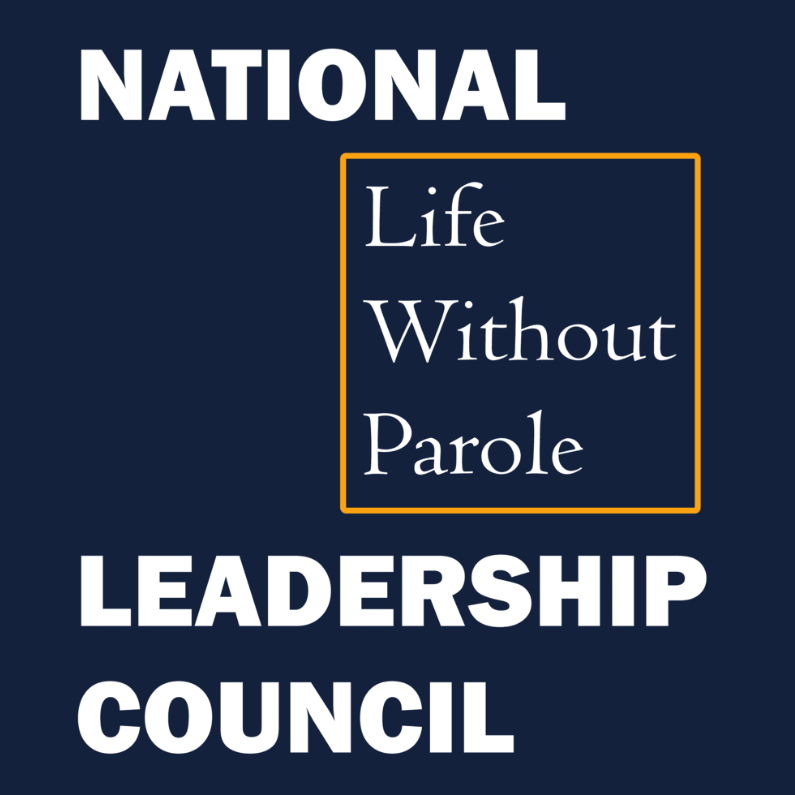
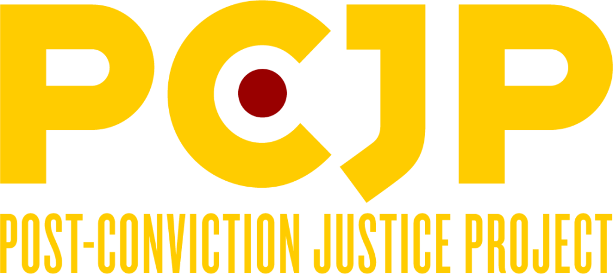
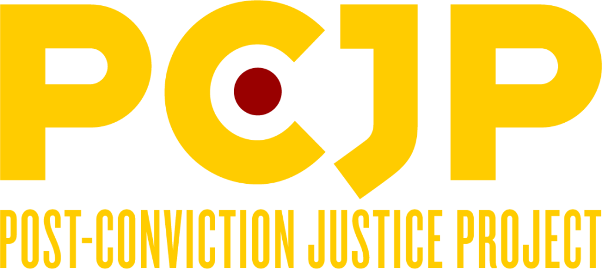

LIFE WITHOUT PAROLE
SECOND CHANCES
NATIONAL LWOP LEADERSHIP COUNCIL
RESOURCES
LIFE WITHOUT PAROLE
SECOND CHANCES
NATIONAL LWOP LEADERSHIP COUNCIL
RESOURCES
Second Chances
Stronger Communities
Rekindle hope. Revitalize communities.
End life without parole.
What is Life Without Parole?
How is LWOP Harmful?
What About Survivors?
What are Alternatives?
Meet Them
People who were sentenced
to die in prison.
Learn More
BY THE NUMBERS
55,000+ People
are currently sentenced to LWOP in
the United States
83 Percent
of the world's LWOP prisoners are in
the United States
1 Country
in the world sentences children to LWOP:
the United States
Learn More
The National LWOP Leadership Council
Meet inspiring individuals who are working to end LWOP across the nation.
Learn More
 
